Everything for the night of 7 August — the format, the scorecard, your metric, and the runway sessions.
Everyone builds on one floor — no room changes all evening. Five judge pairs rove from 5 PM (mentor laps first, the scoring lap 7:00–8:00), the company joins at 8, the Judges' Pick 8 are announced at 8:15 and share their patterns from the stage end — and the best entries go to the 99x expert panel, then to the customer as a real offering. Timeline: kickoff 5:00 · scoring lap 7:00–8:00 · dinner ~7:45 · picks 8:15 · sharing 8:20 · close ~8:55.
One scoring lap, and the anchors board: the NorthStar's four pillars — Higher PaceBetter QualityExtended ValueA Team That Thrives — what the pain looks like, the elevation path, and the proof that counts.
Rubric walkthrough · pair up · take your route
No scores — help teams sharpen the pain & the proof
Your route: ~6 tables × ~10 min, six steps in order
Each pair picks 2 → panel of ten settles the 8 over dinner
Judges' Pick 8 — and 2–3 written notes to every team
Judging starts at the pain: is it real, is it mapped to the right pillar, did that pillar move? Both print boards are on the Marketing & Printables tab.
One score per visit, six steps in the order they're judged — 0–5 each, out of 30. The offering step asks the value questions right at the table: a named Monday-morning user, the workflow it lands in, unit economics, the honest gap list.
Orange steps = 20 of 30. Pain, mapping, proof and offering carry the majority — effectiveness and value outweigh the machinery by design.
Rank within your route, never across — the panel's dinner deliberation is where routes reconcile. Ties break on the gate. The printable card (A4 landscape, one per team per judge) is on the Marketing & Printables tab.
Judges walk the floor, read the plate, and say "run it now." Set the pod up so that's a 30-second ask — and keep the name plate facing the walkway: it's how judges ID your team. Your metric, your baseline and the two-week runway live on the Team Guide tab.
Set up the pod: one laptop as the demo screen, the gate on screen, the plate facing the walkway — ready for the six questions the 10-minute visit asks, in order. The pod layout board and the name plate template are on the Marketing & Printables tab.
Every scoring axis traces to published evidence — DORA 2025, the METR RCT, DX Core 4, Anthropic's agent frameworks, Gartner, McKinsey, MIT/NANDA, and the HackMIT judging research. The rubric documents:
Rubric overview · The floor scorecard — six steps · Event layout — one floor · Anchors · Research grounding
Four moves, in order. You can't pick a solution before you know where you stand and which pillar you're aiming at.
Locate your team on the 5 waves of AI tooling below. Be honest — most of us work at waves 1–3 today.
Walk your project's lifecycle, find the pain that costs the most, and declare the 1–2 NorthStar pillars it lives under.
Steal a proven agent pattern from the stage menu and put a human decision gate in front of production.
Baseline in week one, drive in week two, bring both numbers to the table — the rest of this tab is exactly that.
We've moved from copy/paste prompts to open enterprise platforms in five short years. Waves 1–3 made one developer faster — and the promise of a fully automated SDLC broke. The real elevation is waves 4–5: lifecycle automation by a hybrid team. Build one level up from where you work today: a wave-4 build — an agent that owns a lifecycle stage, with a human at the gate.
The NorthStar: "Incorporate AI into the software development lifecycle in a way that elevates project performance." Your project's biggest pain lives under one of these four pillars. Declare 1–2 on your name plate — you're scored there, and only there:
You don't have to invent the pattern. Agents already earn their keep at every lifecycle stage — steal a play and aim it at your pain:
Move 4 — run the metric — is the rest of this tab: one metric, baselined before the agent, driven in week two. Keep reading. ↓
The judges score the elevation, not the agent — and an elevation is a number that moved. A number can only move against a baseline taken before the agent touched anything. That's what the two weeks between ramp-up and event day are for: they are your measurement window, not just build time.
Your metric belongs to the pillar you declared Higher PaceBetter QualityExtended ValueA Team That Thrives — the menu below gives you proven, modern metric families for each. DORA is the backbone, but anything honestly measurable counts: DX Core 4, SPACE, DevEx, customer KPIs, AI-resolution metrics — sources at the end of this tab.
Same calendar as the event — seen from your side of the table.
You declare your 1–2 pillars. Before you leave the room, know which metric you'd measure — the menu below is your shortlist.
Metric and direction declared. Start the baseline the same day — measure the pain as it is today, before any agent exists.
On the real project: time 3–6 real runs of the slow task, pull last month's tickets or PRs, run the 3-question team pulse. Write the number down with the date and the method.
The agent goes to work on the metric. Measure with exactly the same method as the baseline — a delta measured two different ways is not a delta.
Baseline · after (measured, or honestly projected — see below) · one sentence on how you measured. That's the fifth check on the floor scorecard, ready before the judge asks.
Two weeks is short. Some teams won't get the agent in front of a customer by 7 Aug — that costs you nothing if your metric thinking is complete. The floor scorecard's universal scale is claim → demonstration → measurement; here's how your proof lands on it:
| Proof level | What it looks like at the table | Where it lands |
|---|---|---|
| Measured | Baseline + after-number, same method, on the real project. "Release task: 4.5 h manual → 40 min with the agent, timed over 6 runs." | top of the scale |
| Projected | Honest baseline + a working pilot shown live + the projection math. "First-response baseline 4.1 h; the agent drafts in 6 min — projected ~70% cut, here's the pilot." | demonstration — strong |
| Claimed | No baseline, no number, adjectives only. "It makes us much faster." | where teams lose |
The rule in one line: the metric and the baseline are mandatory; the after-number may be measured or projected — but a projection without a shown pilot and visible math is just a claim wearing a suit.
The name plate carries your declared pillars — put the metric, direction and baseline right under them. Have ready: the before number · the after or projected number · one sentence on the method · at most one chart. When a judge says "run it now," the metric story should take 30 seconds and the demo the rest.
Every family on the menu traces to a published framework — the same evidence base as the rubric's research grounding.
Two ramp-up sessions on the runway, then the night itself.
From idea to a running start — the NorthStar & agentic maturity, a live Xianix example, and SWOT on your own agent play. ~1.5 hours; details on the Sessions tab.
One week out: engineering, delivery and senior leadership on the agentic projects and challenges we've already seen. Bring your hardest questions — details on the Sessions tab.
One floor, all 29 teams in a single sitting · ten judges roam in five pairs, scoring lap 7:00–8:00 · Judges' Pick 8 announced 8:15 · the eight teach the whole company what they built · dinner on the same floor.
Two sessions carry every team from idea to event-ready. Invitations below are shareable as-is — full-size cards for all four events (including the leads briefing and event day) live on the Marketing tab.
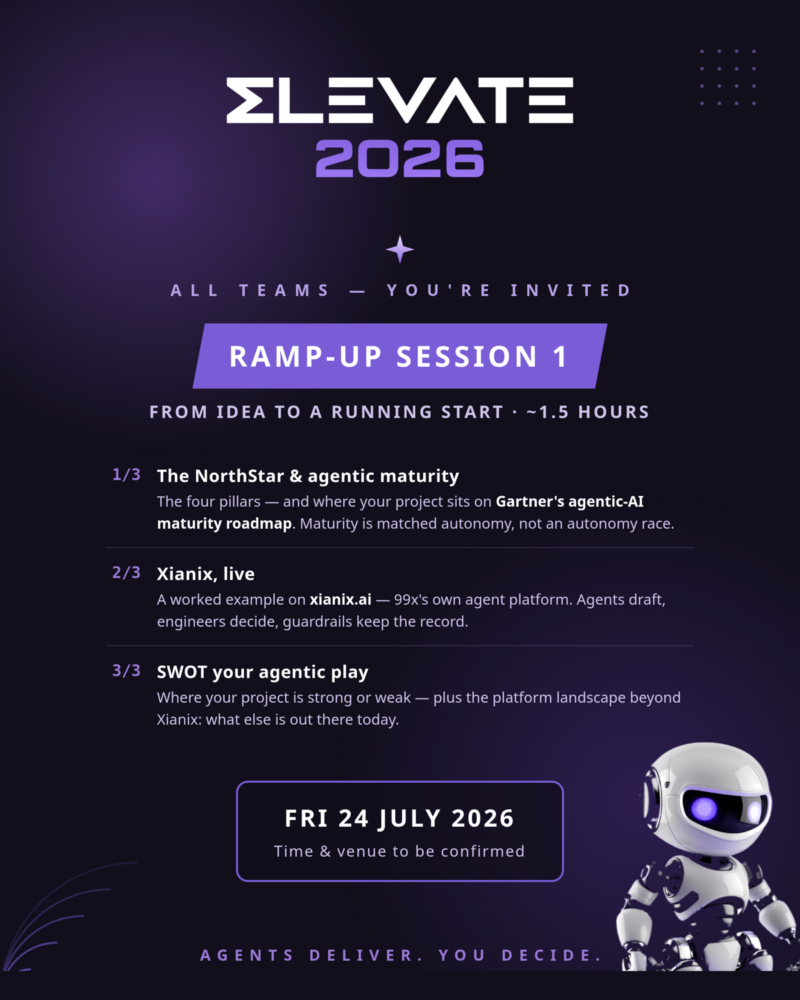
One week out. The panel represents three seats — and the conversation is the projects and challenges we have already seen, so teams leave inspired and with their open questions answered.
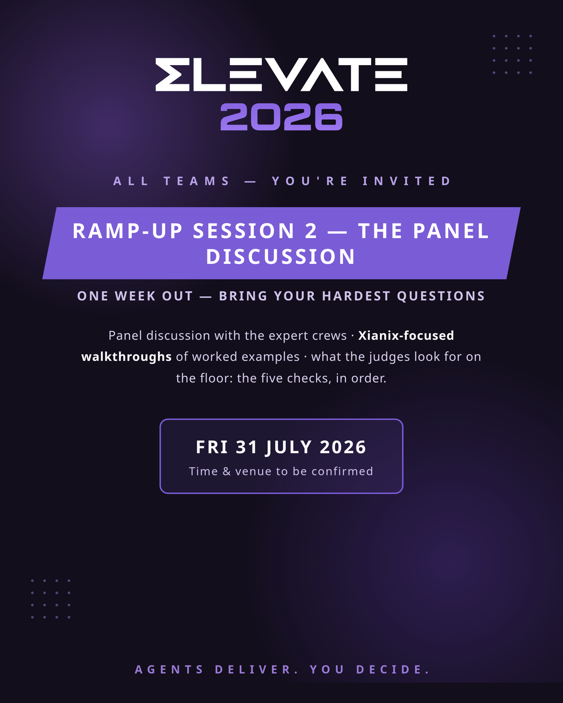
How 61 project rows (254 people) become the teams on the floor. Person-level rosters stay internal — this view shows teams and pool sizes.
Set aside from competition; ten of them rove as the five judge pairs (one pair per route block for the scoring lap) and the pool runs mentor laps all evening.
One list, one column tells you if the team is a project standing alone (4+ members) or a domain combination of smaller projects. Every team fields 3 builders. BUS Research joins the BUS pool; Solwr OMS-Retail joins the Solwr OMS pool. Each domain team picks one member project as its real target on day one ("ran on the real project").
| # | Team | Type | Combined from | Pool |
|---|---|---|---|---|
| 1 | Compello Process | Standalone | — | 23 |
| 2 | Adra Balancer | Standalone | — | 15 |
| 3 | NRC | Standalone | — | 14 |
| 4 | BUS | Standalone | — (+ BUS Research) | 14 |
| 5 | Adra Task Manager | Standalone | — | 10 |
| 6 | Amili Send | Standalone | — | 9 |
| 7 | Hatteland | Standalone | — | 9 |
| 8 | Adra Platform | Standalone | — | 9 |
| 9 | Adra Matcher | Standalone | — | 9 |
| 10 | Parkly | Standalone | — | 8 |
| 11 | SuperOffice QA | Standalone | — | 8 |
| 12 | SuperOffice Dev | Standalone | — | 7 |
| 13 | UpNorway | Standalone | — | 7 |
| 14 | Raintree Inc. | Standalone | — | 7 |
| 15 | Solwr OMS | Standalone | — (+ OMS-Retail) | 7 |
| 16 | CarCare | Standalone | — | 6 |
| 17 | Amili EDI | Standalone | — | 4 |
| 18 | Adra Journal Entry | Standalone | — | 4 |
| 19 | My1min | Standalone | — | 4 |
| 20 | BagID | Standalone | — | 4 |
| 21 | Amili Collections & Payments | Domain combined | Amili ARM · Pay · AutoCollect | 6 |
| 22 | Amili Customer Experience | Domain combined | Amili MyPage · Customer Portal | 5 |
| 23 | Finance & Accounting | Domain combined | Cantor · Kimaa · Flowyser | 5 |
| 24 | Data Platforms | Domain combined | Arktika · Amili Data Platform · Gture-Ditio | 5 |
| 25 | Society & Welfare | Domain combined | Friskus · SosialT · No Isolation · VardaCare · Gov Digitalization | 8 |
| 26 | Built Environment | Domain combined | Boligmappa-Tilde · AreaSim | 5 |
| 27 | Incrementi | Domain combined | Envo · Sebastian AS | 4 |
| 28 | Products & IoT | Domain combined | Plaato · Grunt · Norwegian SubSea · Kahoot | 6 |
| 29 | Enablement | Domain combined | BA · UX · QA Development · Internal Projects | 6 |
Everything printed for the night, ready to send to the printer.
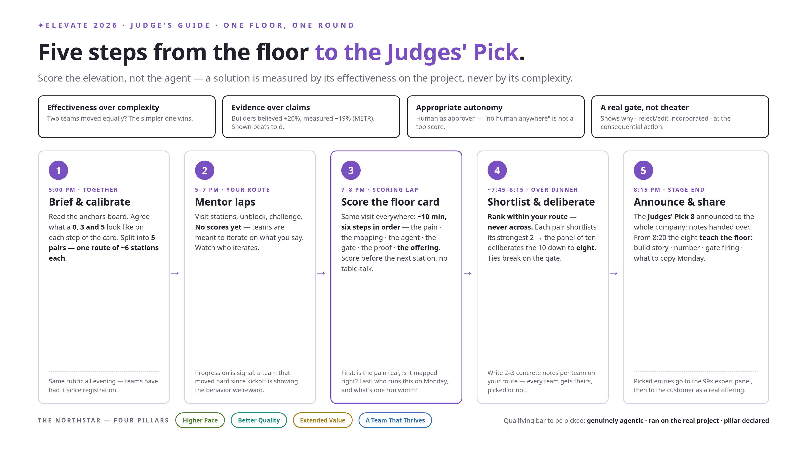
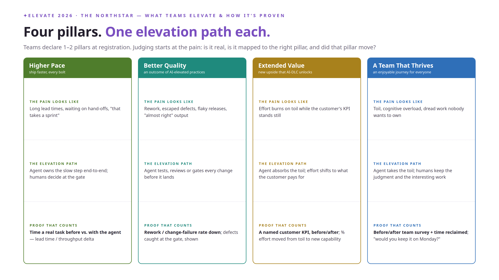
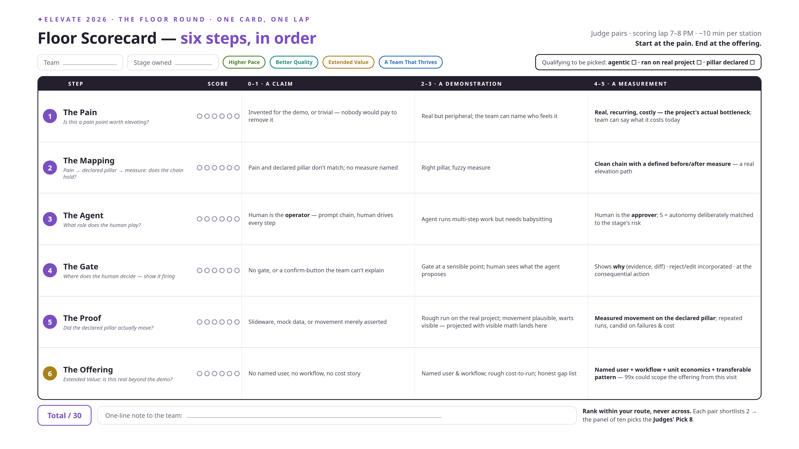
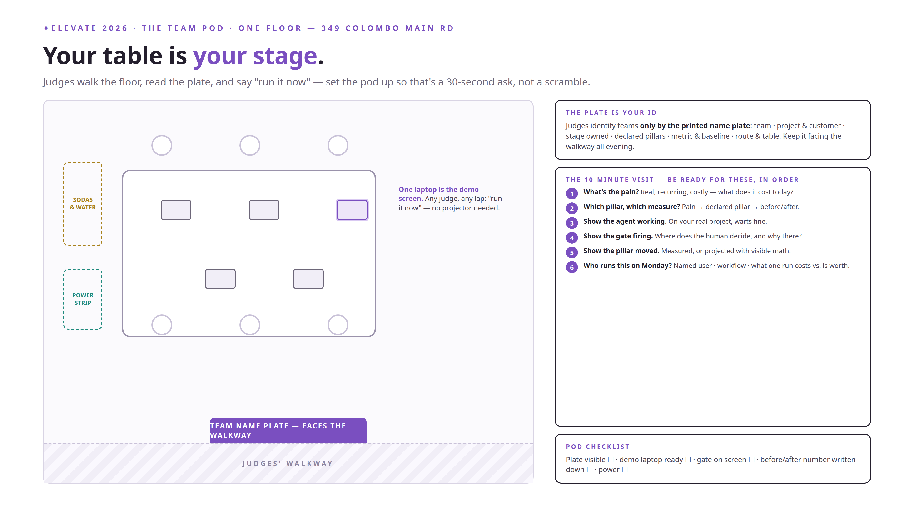
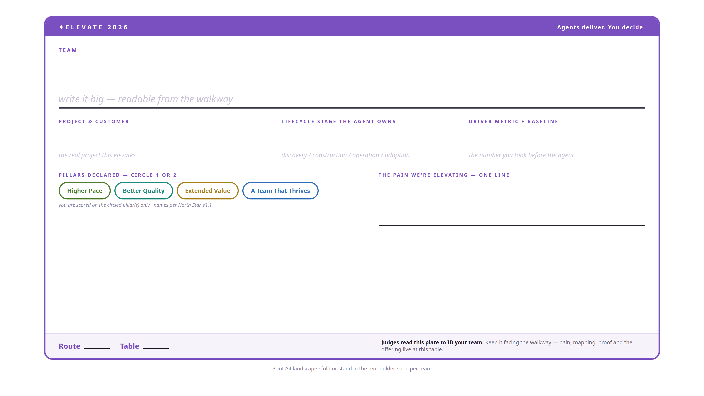
Everything shareable in one place — the launch flyer, the four invitation cards and the official logo set. Web-sized previews below; print-quality originals are linked under each card (from marketing/ in the repo).
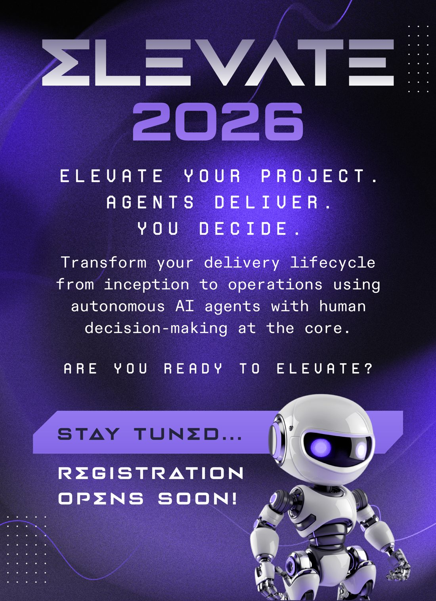
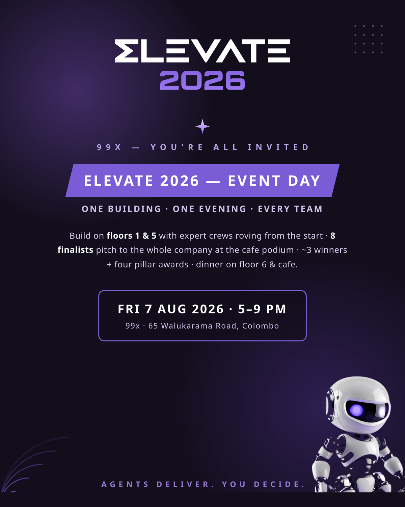
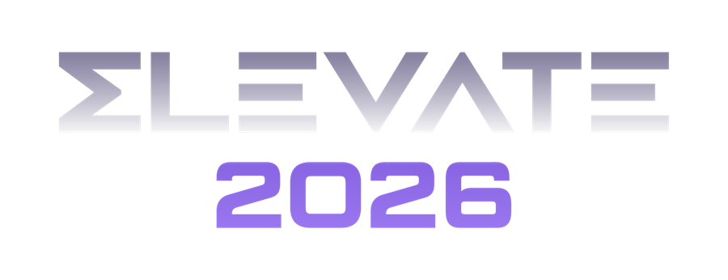
Three stage backdrops — 7680×4320 (16:9). Backdrops are viewed from metres away, so this one file prints crisp at 3 m wide (~65 dpi) and holds fine up to ~6 m (~32 dpi). Tell the printer: scale proportionally, 16:9 source, standard bleed — key content sits in the center 80%. Non-16:9 frame? Send the dimensions and we re-compose. Full guidance: backdrops.md.
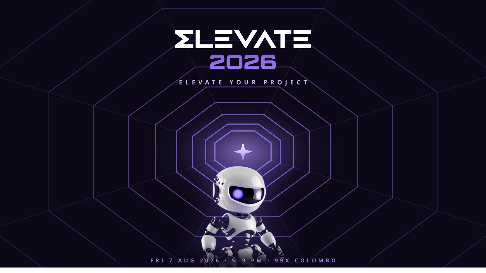
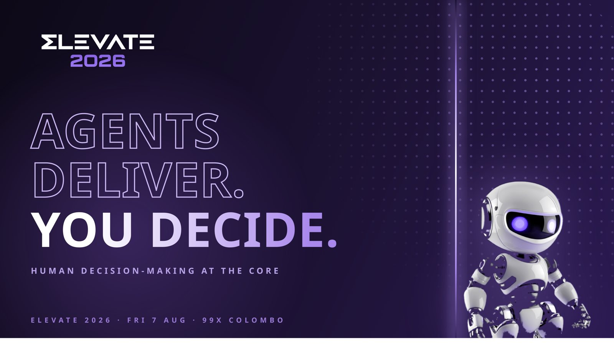
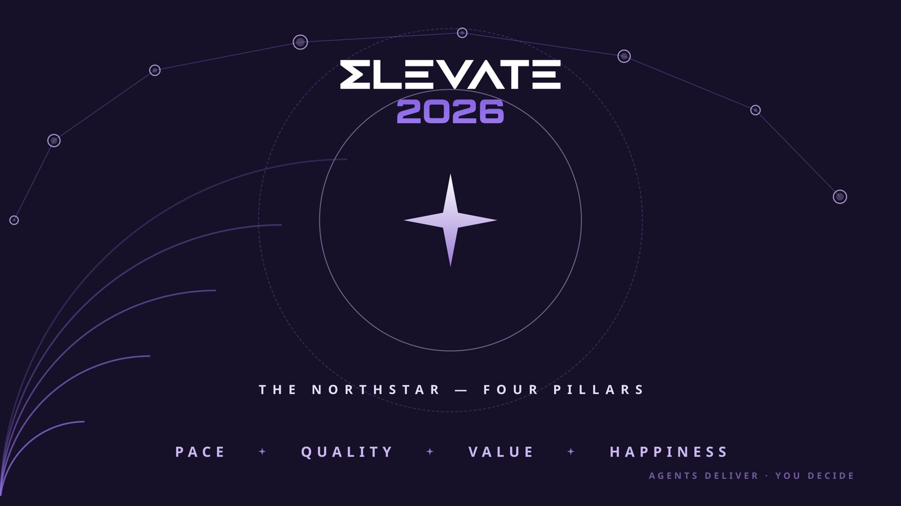
{kind=link}
{kind=link}
{kind=link}
{kind=link}
{kind=link}
{kind=link}
{kind=link}
{kind=link}
{kind=link}
{kind=link}
{kind=link}
{kind=link}
{kind=link}
{kind=link}
{kind=link}
{kind=link}
{kind=link}
{kind=link}
{kind=link}
{kind=link}